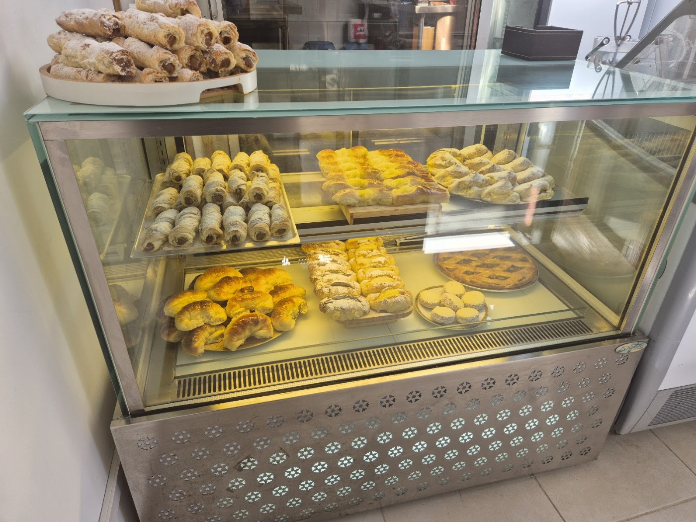
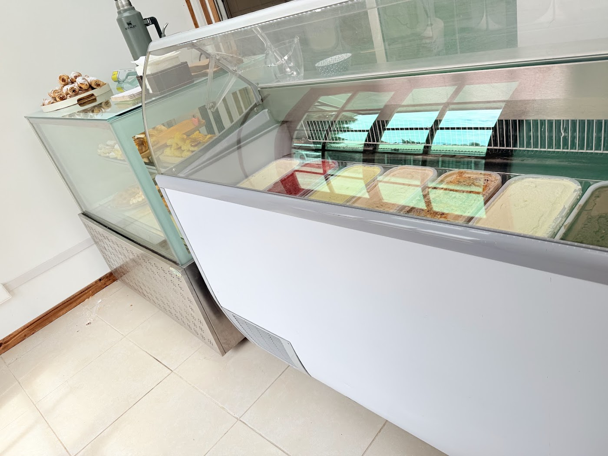
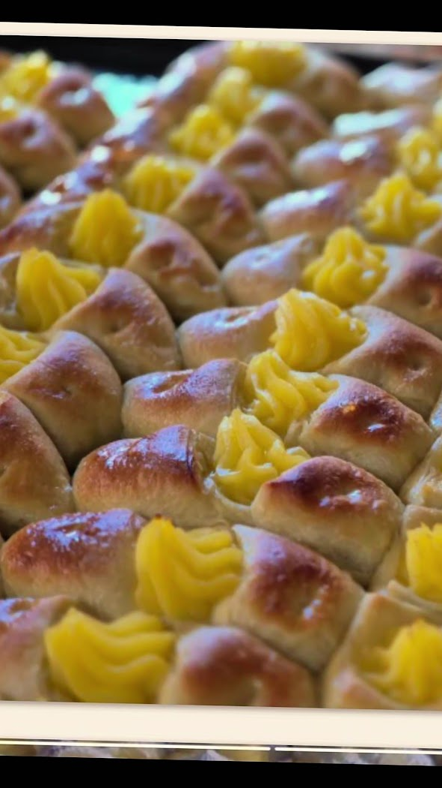

Pastelería argentina
Cañoncitos de dulce de leche, medialunas, pastafrola y alfajores de maicena. Todo eso se ve en sus propias fotos, sin adornos.

Pastelería argentina y heladería · San Bernardo
Pastelería argentina hecha acá, en El Cerrillo 19364. Y además, vitrina propia de helados artesanales.
Cañoncitos de dulce de leche, medialunas, pastafrola y alfajores de maicena. Todo eso se ve en sus propias fotos, sin adornos.
Tienen su propia vitrina de helados con las tinas a la vista. Google los tiene catalogados solo como pastelería, así que mucha gente no lo sabe.
"Precios" es la palabra más repetida en sus opiniones. Una reseña lo pone así: "exquisitos y variados productos, buenos precios… son adictivos esos pasteles".
Placeres Argentino es pastelería argentina y heladería en El Cerrillo 19364. Cañoncitos, medialunas, pastafrola, alfajores de maicena y helados artesanales, para llevar.
Una de sus reseñas dice algo que conviene leer dos veces: "linda tienda para comprar, muy buenos precios y productos, pero su ubicación está un poco escondida". Y otra cuenta cómo los descubrió: "venden los productos a la salida del colegio de mis hijos". El producto ya convence — lo que falta es que sea fácil encontrarlos.


Arma tu pedido y consúltanos. Todo lo que aparece acá se ve en sus propias fotos: no hay nada de relleno.
"Exquisitos y variados productos, buenos precios. Los conocí porque venden los productos a la salida del colegio de mis hijos. ¡Son adictivos esos pasteles!"
"Maravillosa experiencia, excelentes productos, 100% recomendados."
"Linda tienda para comprar, muy buenos precios y productos."